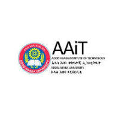

My Education
Master of Engineering in Embedded Systems, Jain University, Bangalore, India | 2019-2021
Pursued a rigorous academic program focused on the design, development, and implementation of embedded systems, in other words the unified engineering of both hardware and software. It deals with real-time systems, and device drivers. Acquired a comprehensive understanding of microcontrollers, digital signal processors, and operating systems. Gained hands-on experience in utilizing tools like Keil, MATLAB, and Simulink for system simulation and analysis. Gained proficiency in industry-standard tools and methodologies. Developed a strong foundation in embedded systems, honing skills in: Microcontroller programming (Arduino, Raspberry Pi) Real-time operating systems (RTOS) Sensor interfacing and data acquisition Wireless communication protocols (Bluetooth, Wi-Fi) I carried out two mini-projects successfully: a telecom tower management system based on Arduino and an intrusion detection camera system based on raspberry pi. My final thesis work was on cellular vehicle to everything (CV2X) communications.
Bacheleor of Science in Electrical Engineering, Addis Ababa University, Ethiopia
In a 5 years long 186 credit hours of Engineering program, I successfully completed my B.Sc. degree course which consisted of both electrical and electronics course at Addis Ababa University. The university is the oldest and the best university in Ethiopia.
Jain University
Electronics and Communications Engineering Department
Faculty of Engineering
https://set.jainuniversity.ac.in/Addis Ababa University
Department of Electrical and Computer Engineering
Addis Ababa Institute of Technology
https://www.aau.edu.et/aait/ My Work Experience
I have more than 21 years of experience in telecommunications, power systems, and e-government solutions. Specialized in digital solutions, spectrum monitoring, and system design. Strong background in managing complex technical projects, regulatory standards, and international collaboration. Skilled in cross-disciplinary research with a focus on telecommunications, energy systems, and digital transformation. Some of my specific roles are
I started my career as a junior Engineer at the Ethiopian electric power company EELPA/EPCO.
My Professional and Research Interests
My current professional and research interests are based on my academic history and extensive professional experience in the Telecommunication, IT, Power and Construction Industry. Thus, I have strong interest in the areas of Embedded Systems, IoT, AI and digital transformation. I closely follow developments in next generation telecom developments including 5G and 6G, DevOps, latest software development paradigms, technology ecosystems. The other area of my interest is in the application of digital technology for development particularly sustainable development including strategic and policy challenges in these area.